공인중개사-2차 (2014-10-26 기출문제)
1과목: 임의구분
1. 공인중개사법령상 용어에 관한 설명으로 틀린 것은?
- 거래당사자 사이에 중개대상물에 관한 교환계약이 성립하도록 알선하는 행위도 중개에 해당한다.
- 중개업자란 공인중개사법에 의하여 중개사무소의 개설 등록을 한 자를 말한다.
- 중개보조원이란 공인중개사가 아닌 자로서 중개업을 하는 자를 말한다.
- 소속공인중개사에는 중개업자인 법인의 사원 또는 임원으로서 공인중개사인 자가 포함된다.
- 공인중개사란 공인중개사법에 의한 공인중개사자격을 취득한 자를 말한다.
(정답률: 53%)

2. 공인중개사법령상 중개대상물이 될 수 없는 것을 모두 고른 것은?(다툼이 있으면 판례에 의함)
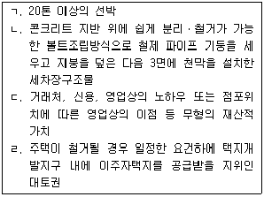
- ㄱ, ㄴ
- ㄷ, ㄹ
- ㄱ, ㄴ, ㄹ
- ㄴ, ㄷ, ㄹ
- ㄱ, ㄴ, ㄷ, ㄹ
(정답률: 62%)
3. 공인중개사법령의 내용에 관한 설명으로 틀린 것은?
- 다른 법률에 의해 중개업을 할 수 있는 경우를 제외하고는 중개업자의 종별에 관계없이 중개대상물의 범위가 같다.
- 중개업자가 아닌 자는 중개대상물에 대한 표시ㆍ광고를 하여서는 아니 된다.
- 중개보조원의 업무상 비밀누설금지의무는 업무를 떠난 후에도 요구된다.
- 폐업신고 전의 중개업자에 대하여 위반행위를 사유로 행한 업무정지처분의 효과는 폐업일부터 1년간 다시 개설등록을 한 자에게 승계된다.
- 국토교통부장관은 부동산거래정보망을 설치ㆍ운영할 자를 지정할 수 있다.
(정답률: 47%)
4. 공인중개사법령상 중개업에 관한 설명으로 옳은 것은?(다툼이 있으면 판례에 의함)
- 반복, 계속성이나 영업성이 없이 우연한 기회에 타인간의 임야매매중개행위를 하고 보수를 받은 경우, 중개업에 해당한다.
- 중개사무소의 개설등록을 하지 않은 자가 일정한 보수를 받고 중개를 업으로 행한 경우, 중개업에 해당하지 않는다.
- 일정한 보수를 받고 부동산 중개행위를 부동산 컨설팅 행위에 부수하여 업으로 하는 경우, 중개업에 해당하지 않는다.
- 보수를 받고 오로지 토지만의 중개를 업으로 하는 경우, 중개업에 해당한다.
- 타인의 의뢰에 의하여 일정한 보수를 받고 부동산에 대한 저당권설정 행위의 알선을 업으로 하는 경우, 그 행위의 알선이 금전소비대차의 알선에 부수하여 이루어졌다면 중개업에 해당하지 않는다.
(정답률: 60%)
5. 공인중개사법령상 중개사무소의 개설등록에 관한 설명으로 틀린 것은?(다른 법률에 의해 중개업을 할 수 있는 경우는 제외함)
- 법인이 중개사무소를 개설등록하기 위해서는「상법」상 회사이면서 자본금 5천만원 이상이어야 한다.
- 공인중개사(소속공인중개사 제외) 또는 법인이 아닌 자는 중개사무소의 개설등록을 신청할 수 없다.
- 중개업자는 다른 중개업자의 소속공인중개사ㆍ중개보조원이 될 수 없다.
- 폐업신고 후 1년 이내에 중개사무소의 개설등록을 다시 신청하려는 공인중개사는 실무교육을 받지 않아도 된다.
- 등록관청이 중개사무소등록증을 교부한 때에는 이 사실을 다음달 10일까지 국토교통부장관에게 통보해야 한다.
(정답률: 56%)
6. 공인중개사법령상 중개사무소 개설등록의 결격사유에 해당하지 않는 자는?
- 파산선고를 받고 복권되지 아니한 자
- 형의 선고유예를 받고 3년이 경과되지 아니한 자
- 만 19세에 달하지 아니한 자
- 공인중개사법을 위반하여 300만원 이상의 벌금형의 선고를 받고 3년이 경과되지 아니한 자
- 금고 이상의 실형의 선고를 받고 그 집행이 종료되거나 집행이 면제된 날부터 3년이 경과되지 아니한 자
(정답률: 64%)
7. 공인중개사법령상 분사무소의 설치에 관한 설명으로 옳은 것을 모두 고른 것은?
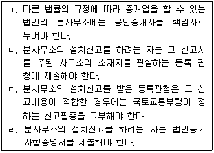
- ㄱ, ㄴ
- ㄱ, ㄷ
- ㄴ, ㄷ
- ㄷ, ㄹ
- ㄱ, ㄴ, ㄹ
(정답률: 52%)
8. 공인중개사법령상 법인인 중개업자의 업무범위에 관한 설명으로 옳은 것은?(다른 법률에 의해 중개업을 할 수 있는 경우는 제외함)
- 토지의 분양대행을 할 수 있다.
- 중개업에 부수되는 도배 및 이사업체를 운영할 수 있다.
- 상업용 건축물의 분양대행을 할 수 없다.
- 겸업제한 규정을 위반한 경우, 등록관청은 중개사무소 개설등록을 취소할 수 있다.
- 대법원규칙이 정하는 요건을 갖춘 경우, 법원에 등록하지 않고 경매대상 부동산의 매수신청 대리를 할 수 있다.
(정답률: 58%)
9. 공인중개사법령상 중개보조원에 관한 설명으로 옳은 것은?
- 중개업자인 법인의 임원은 다른 중개업자의 중개보조원이 될 수 있다.
- 중개보조원의 업무상의 행위는 그를 고용한 중개업자의 행위로 보지 않는다.
- 중개보조원은 중개대상물확인ㆍ설명서에 날인할 의무가 있다.
- 중개업자는 중개보조원과의 고용관계가 종료된 때에는 종료된 날부터 1월 이내에 등록관청에 신고해야 한다.
- 중개보조원의 업무상 행위가 법령을 위반하더라도 중개보조원에게 업무정지처분을 명할 수 있는 규정이 없다.
(정답률: 52%)
10. 공인중개사법령상 인장등록에 관한 설명으로 옳은 것을 모두 고른 것은?
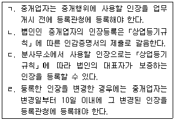
- ㄱ, ㄴ
- ㄷ, ㄹ
- ㄱ, ㄴ, ㄷ
- ㄴ, ㄷ, ㄹ
- ㄱ, ㄴ, ㄷ, ㄹ
(정답률: 50%)
11. 공인중개사법령상 중개업자가 설치된 사무소의 간판을 지체 없이 철거해야 하는 경우로 명시된 것을 모두 고른 것은?
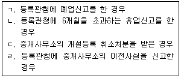
- ㄱ, ㄴ
- ㄷ, ㄹ
- ㄱ, ㄴ, ㄹ
- ㄱ, ㄷ, ㄹ
- ㄱ, ㄴ, ㄷ, ㄹ
(정답률: 62%)
12. 공인중개사법령상 휴업 또는 폐업에 관한 설명으로 옳은 것은?
- 중개업자가 휴업한 중개업을 재개하고자 하는 때에는 휴업한 중개업의 재개 후 1주일 이내에 신고해야 한다.
- 중개업자가 1월을 초과하는 휴업을 하는 때에는 등록관청에 그 사실을 신고해야 한다.
- 중개업자가 휴업을 하는 경우, 질병으로 인한 요양 등 대통령령이 정하는 부득이한 사유가 있는 경우를 제외하고는 3월을 초과할 수 없다.
- 휴업기간 중에 있는 중개업자는 다른 중개업자의 소속 공인중개사가 될 수 있다.
- 재등록 중개업자에 대하여 폐업신고 전의 업무정지처분에 해당하는 위반행위를 사유로 업무정지처분을 함에 있어서는 폐업기간과 폐업사유 등을 고려해야 한다.
(정답률: 57%)
13. 공인중개사법령상 중개계약에 관한 설명으로 틀린 것은?
- 중개업자는 전속중개계약을 체결한 때, 중개의뢰인이 당해 중개대상물에 관한 정보의 비공개를 요청한 경우에는 부동산거래정보망과 일간신문에 이를 공개해서는 아니 된다.
- 전속중개계약을 체결한 중개업자는 부동산거래정보망에 중개대상물의 정보를 공개할 경우, 권리자의 주소ㆍ성명을 공개해야 한다.
- 당사자 간에 다른 약정이 없는 한 전속중개계약의 유효 기간은 3월로 한다.
- 중개의뢰인은 중개업자에게 거래예정가격을 기재한 일반중개계약서의 작성을 요청할 수 있다.
- 중개업자는 전속중개계약을 체결한 때에는 당해 계약서를 3년간 보존해야 한다.
(정답률: 62%)
14. 공인중개사법령상 중개업자의 중개대상물확인ㆍ설명서 작성에 관한 설명으로 옳은 것은?
- 중개업자는 중개가 완성되어 거래계약서를 작성하는 때, 확인ㆍ설명사항을 서면으로 작성하여 거래당사자에게 교부하고 확인ㆍ설명서 사본을 5년간 보존해야 한다.
- 중개업자는 중개대상물의 상태에 관한 자료요구에 매도 의뢰인이 불응한 경우, 그 사실을 매수의뢰인에게 설명하고 중개대상물확인ㆍ설명서에 기재해야 한다.
- 중개대상물확인ㆍ설명서에는 중개업자가 서명 또는 날인하되, 당해 중개행위를 한 소속공인중개사가 있는 경우에는 소속공인중개사가 함께 서명 또는 날인해야 한다.
- 공동중개의 경우, 중개대상물확인ㆍ설명서에는 참여한 중개업자(소속공인중개사 포함) 중 1인이 서명ㆍ날인하면 된다.
- 중개가 완성된 후 중개업자가 중개대상물확인ㆍ설명서를 작성하여 교부하지 아니한 것만으로도 중개사무소 개설 등록 취소사유에 해당한다.
(정답률: 59%)
15. 공인중개사법령상 비주거용 건축물 중개대상물확인ㆍ설명서 작성 시 중개업자의 세부확인사항이 아닌 것은?
- 벽면의 균열 유무
- 승강기의 유무
- 주차장의 유무
- 비상벨의 유무
- 가스(취사용)의 공급방식
(정답률: 47%)
16. 공인중개사법령상 부동산거래신고에 관한 설명으로 옳은 것은?
- 부동산거래의 신고를 하려는 중개업자는 부동산거래계약 신고서에 서명 또는 날인을 하여 거래대상 부동산 소재지 관할 신고관청에 제출해야 한다.
- 중개업자가 공동으로 중개하는 경우, 부동산거래신고는 공동으로 중개한 중개업자 중 어느 1인의 명의로 해도 된다.
- 중개대상물의 범위에 속하는 물건의 매매계약을 체결한 때에는 모두 부동산거래신고를 해야 한다.
- 부동산거래계약 신고서의 방문 제출은 당해 거래계약을 중개한 중개업자의 위임을 받은 소속공인중개사가 대행 할 수 없다.
- 외국인이 대한민국 안의 토지를 취득하는 계약을 체결 하였을 때, 부동산거래신고를 한 경우에도「외국인토지법」에 따른 토지취득신고를 해야 한다.
(정답률: 45%)
17. 공인중개사법령상 손해배상책임의 보장에 관한 설명으로 옳은 것은?
- 중개업자의 손해배상책임을 보장하기 위한 보증보험 또는 공제 가입, 공탁은 중개사무소 개설등록신청을 할때 해야 한다.
- 다른 법률의 규정에 따라 중개업을 할 수 있는 법인이 부동산중개업을 하는 경우 업무보증설정을 하지 않아도 된다.
- 공제에 가입한 중개업자로서 보증기간이 만료되어 다시 보증을 설정하고자 하는 자는 그 보증기간 만료 후 15일 이내에 다시 보증을 설정해야 한다.
- 중개업자가 손해배상책임을 보장하기 위한 조치를 이행하지 아니하고 업무를 개시한 경우 등록관청은 개설등록을 취소할 수 있다.
- 보증보험금으로 손해배상을 한 경우 중개업자는 30일 이내에 보증보험에 다시 가입해야 한다.
(정답률: 50%)
18. 공인중개사법령상 중개업자의 금지행위에 해당하지 않는 것은?(다툼이 있으면 판례에 의함)
- 토지 또는 건축물의 매매를 업으로 하는 행위
- 중개의뢰인이 부동산을 단기 전매하여 세금을 포탈하려는 것을 알고도 중개업자가 이에 동조하여 그 전매를 중개한 행위
- 공인중개사가 매도의뢰인과 서로 짜고 매도의뢰가격을 숨긴 채 이에 비하여 무척 높은 가격으로 매수의뢰인에게 부동산을 매도하고 그 차액을 취득한 행위
- 중개업자가 소유자로부터 거래에 관한 대리권을 수여받은 대리인과 직접 거래한 행위
- 매도인으로부터 매도중개의뢰를 받은 중개업자 乙의 중개로 X부동산을 매수한 중개업자 甲이, 매수중개의뢰를 받은 다른 중개업자 丙의 중개로 X부동산을 매도한 행위
(정답률: 59%)
19. 공인중개사법령상 중개업자등의 교육에 관한 설명으로 틀린 것은?
- 실무교육과 연수교육은 시ㆍ도지사가 실시한다.
- 실무교육의 교육시간은 28시간 이상 32시간 이하이다.
- 실무교육을 실시하려는 경우 교육실시기관은 교육일 7일전까지 교육의 일시ㆍ장소ㆍ내용 등을 대상자에게 통지해야 한다.
- 실무교육을 받은 중개업자 및 소속공인중개사는 실무교육을 받은 후 2년마다 12시간 이상 16시간 이하의 연수 교육을 받아야 한다.
- 중개보조원이 고용관계 종료 신고된 후, 1년 이내에 다시 고용신고 될 경우에는 직무교육을 받지 않아도 된다.
(정답률: 53%)
20. 공인중개사법령상 공인중개사의 자격취소와 자격정지에 관한 설명으로 틀린 것은?
- 자격취소 또는 자격정지처분을 할 수 있는 자는 자격증을 교부한 시ㆍ도지사이다.
- 자격취소처분은 공인중개사를 대상으로, 자격정지처분은 소속공인중개사를 대상으로 한다.
- 자격정지처분을 받고 그 자격정지기간 중에 중개업무를 행한 경우는 자격취소사유에 해당한다.
- 공인중개사에 대하여 자격취소와 자격정지를 명할 수 있는 자는 자격취소 또는 자격정지 처분을 한 때에 5일이내에 국토교통부장관에게 보고해야 한다.
- 자격정지사유에는 행정형벌이 병과될 수 있는 경우도 있다.
(정답률: 41%)
21. 공인중개사법령상 공인중개사협회에 관한 설명으로 옳은 것은?
- 협회는 재무건전성기준이 되는 지급여력비율을 100분의 100 이상으로 유지해야 한다.
- 협회의 창립총회는 서울특별시에서는 300인 이상의 회원의 참여를 요한다.
- 협회는 시ㆍ도에 지부를 반드시 두어야 하나, 군ㆍ구에 지회를 반드시 두어야 하는 것은 아니다.
- 협회는 총회의 의결내용을 15일 내에 국토교통부장관에게 보고해야 한다.
- 협회의 설립은 공인중개사법령의 규정을 제외하고「민법」의 사단법인에 관한 규정을 준용하므로 설립허가주의를 취한다.
(정답률: 45%)
22. 공인중개사법령상 중개사무소의 개설등록을 반드시 취소해야 하는 사유가 아닌 것은?
- 중개업자인 법인이 해산한 경우
- 거짓된 방법으로 중개사무소의 개설등록을 한 경우
- 이중으로 중개사무소의 개설등록을 한 경우
- 중개업자가 다른 중개업자의 중개보조원이 된 경우
- 중개업자가 천막 등 이동이 용이한 임시중개시설물을 설치한 경우
(정답률: 48%)
23. 공인중개사법령상 중개업자에 대한 업무정지처분을 할 수 없는 경우는?
- 중개업자가 등록하지 아니한 인장을 사용한 경우
- 중개업자가 최근 1년 이내에 공인중개사법에 의하여 1회의 과태료 처분을 받고 다시 과태료 처분에 해당하는 행위를 한 경우
- 중개업자가 부동산거래정보망에 중개대상물에 관한 정보를 거짓으로 공개한 경우
- 법인인 중개업자가 최근 1년 이내에 겸업금지 규정을 1회 위반한 경우
- 중개대상물확인ㆍ설명서 사본의 보존기간을 준수하지 않은 경우
(정답률: 49%)
24. 공인중개사법령상 공인중개사협회의 공제사업에 관한 설명으로 옳은 것을 모두 고른 것은?(다툼이 있으면 판례에 의함)
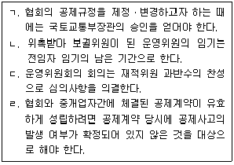
- ㄱ, ㄴ
- ㄷ, ㄹ
- ㄱ, ㄴ, ㄹ
- ㄴ, ㄷ, ㄹ
- ㄱ, ㄴ, ㄷ, ㄹ
(정답률: 34%)
25. 공인중개사법령상 甲과 乙이 받을 수 있는 포상금의 최대 금액은?
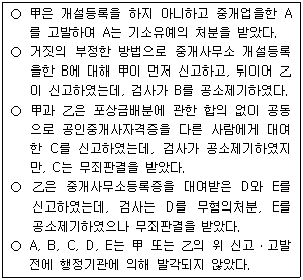
- 甲: 75만원, 乙: 25만원
- 甲: 75만원, 乙: 50만원
- 甲: 100만원, 乙: 50만원
- 甲: 125만원, 乙: 75만원
- 甲: 125만원, 乙: 100만원
(정답률: 55%)
26. 공인중개사법령상 국토교통부장관이 공인중개사협회의 공제사업 운영에 대하여 개선조치로서 명할 수 있는 것으로 명시되지 않은 것은?
- 자산예탁기관의 변경
- 자산의 장부가격의 변경
- 업무집행방법의 변경
- 공제사업의 양도
- 불건전한 자산에 대한 적립금의 보유
(정답률: 53%)
27. 공인중개사법령상 관련 행정청에 수수료를 납부하여야 하는 사유로 명시되어 있는 것을 모두 고른 것은?
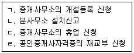
- ㄴ, ㄷ
- ㄱ, ㄴ, ㄹ
- ㄱ, ㄷ, ㄹ
- ㄴ, ㄷ, ㄹ
- ㄱ, ㄴ, ㄷ, ㄹ
(정답률: 56%)
28. 공인중개사법령상 벌칙의 법정형이 같은 것끼리 모두 묶은 것은?
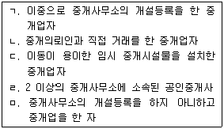
- ㄱ, ㄴ
- ㄱ, ㄷ, ㄹ
- ㄱ, ㄹ, ㅁ
- ㄴ, ㄷ, ㅁ
- ㄷ, ㄹ, ㅁ
(정답률: 52%)
29. 공인중개사법령상 중개대상물확인ㆍ설명서 작성방법에 관한 설명으로 옳은 것은?
- 권리관계의 ‘등기부기재사항’은 중개업자 기본 확인사항으로, ‘실제권리관계 또는 공시되지 않은 물건의 권리 사항’은 중개업자 세부 확인사항으로 구분하여 기재한다.
- ‘건폐율 상한 및 용적률 상한’은 중개업자 기본 확인사항으로 토지이용계획확인서의 내용을 확인하여 적는다.
- ‘거래예정금액’은 중개업자 세부 확인사항으로 중개가 완성된 때의 거래금액을 기재한다.
- ‘취득시 부담할 조세의 종류 및 세율’은 중개대상물 유형별 모든 서식에 공통적으로 기재할 사항으로 임대차의 경우에도 기재해야 한다.
- 중개수수료는 법령으로 정한 요율 한도에서 중개의뢰인과 중개업자가 협의하여 결정하며, 중개수수료에는 부가가치세가 포함된 것으로 본다.
(정답률: 50%)
30. 공인중개사법령상 중개업자의 거래계약서 작성에 관한 설명으로 옳은 것은?
- 중개대상물확인ㆍ설명서 교부일자는 거래계약서에 기재해야 할 사항이 아니다.
- 당해 중개행위를 한 소속공인중개사도 거래계약서를 작성할 수 있으며, 이 경우 중개업자만 서명 및 날인하면 된다.
- 거래계약서는 국토교통부장관이 정하는 표준 서식으로 작성해야 한다.
- 법인의 분사무소가 설치되어 있는 경우, 그 분사무소에서 작성하는 거래계약서에 분사무소의 책임자가 서명 및 날인해야 한다.
- 중개업자가 거래계약서에 거래내용을 거짓으로 기재한 경우, 1년 이하의 징역 또는 1천만원 이하의 벌금에 처해진다.
(정답률: 49%)
31. 공인중개사법령상 중개업자의 부동산거래계약 신고서 작성방법에 관한 설명으로 틀린 것은?
- 거래당사자가 다수인 경우 매수인 또는 매도인의 주소란에 각자의 거래지분 비율을 표시한다.
- 거래대상 부동산의 종류가 건축물인 경우에는「건축법 시행령」에 따른 용도별 건축물의 종류를 적는다.
- 거래대상 면적에는 실제 거래면적을 계산하여 적되, 집합건축물의 경우 전용면적과 공용면적을 합산하여 기재한다.
- 거래대상 거래금액란에는 둘 이상의 부동산을 함께 거래하는 경우 각각의 부동산별 거래금액을 적는다.
- 중개업자의 인적 사항 및 중개사무소 개설등록에 관한 사항을 기재해야 한다.
(정답률: 45%)
32. 중개업자가 X시에 소재하는 주택의 면적이 3분의 1인 건축물에 대하여 매매와 임대차계약을 동시에 중개하였다. 중개업자가 甲으로부터 받을 수 있는 중개 수수료의 최고한도액은?
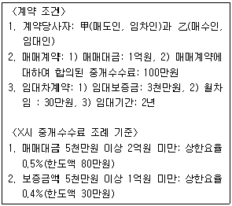
- 50만원
- 74만원
- 90만원
- 100만원
- 124만원
(정답률: 51%)
33. 「공인중개사의 매수신청대리인 등록 등에 관한 규칙」의 내용으로 틀린 것은?
- 공인중개사는 중개사무소 개설등록을 하지 않으면 매수신청대리인 등록을 할 수 없다.
- 중개업자가 매수신청대리를 위임받은 경우 당해 매수신청대리 대상물의 경제적 가치에 대하여는 위임인에게 설명하지 않아도 된다.
- 중개업자는 매수신청대리에 관한 수수료표와 수수료에 대하여 위임인에게 위임계약 전에 설명해야 한다.
- 중개업자는 매수신청대리행위를 함에 있어서 매각장소 또는 집행법원에 직접 출석해야 한다.
- 중개업자가 매수신청대리 업무정지처분을 받은 때에는 업무정지사실을 당해 중개사사무소의 출입문에 표시해야 한다.
(정답률: 49%)
34. 중개업자가 법원의 부동산경매에 관하여 의뢰인에게 설명한 내용으로 틀린 것은?
- 기일입찰에서 매수신청의 보증금액은 매수신고가격의 10분의 1로 한다.
- 차순위매수신고는 그 신고액이 최고가매수신고액에서 그 보증액을 뺀 금액을 넘는 때에만 할 수 있다.
- 매수인은 매각대금을 다 낸 때에 매각의 목적인 권리를 취득한다.
- 가압류채권에 대항할 수 있는 전세권은 그 전세권자가 배당요구를 하면 매각으로 소멸된다.
- 재매각절차에서 전(前)의 매수인은 매수신청을 할 수 없으며, 매수신청의 보증을 돌려줄 것을 요구하지 못한다.
(정답률: 34%)
35. 중개업자가 중개의뢰인에게 중개대상물에 관한 법률관계를 설명한 내용으로 틀린 것은?(다툼이 있으면 판례에 의함)
- 건물 없는 토지에 저당권이 설정된 후, 저당권설정자가 건물을 신축하고 저당권의 실행으로 인하여 그 토지와 지상건물이 소유자를 달리하게 된 경우에 법정지상권이 성립한다.
- 대지와 건물이 동일소유자에게 속한 경우, 건물에 전세권을 설정한 때에는 그 대지소유권의 특별승계인은 전세권설정자에 대하여 지상권을 설정한 것으로 본다.
- 지상권자가 약정된 지료를 2년 이상 지급하지 않은 경우, 지상권설정자는 지상권의 소멸을 청구할 수 있다.
- 지상권자가 지상물의 소유자인 경우, 지상권자는 지상권을 유보한 채 지상물 소유권만을 양도할 수 있다.
- 지상권의 존속기간은 당사자가 설정행위에서 자유롭게 정할 수 있으나, 다만 최단기간의 제한이 있다.
(정답률: 47%)
36. 중개업자가 토지를 중개하면서 분묘기지권에 대해 설명한 내용으로 틀린 것을 모두 고른 것은?(다툼이 있으면 판례에 의함)
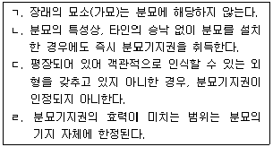
- ㄱ, ㄷ
- ㄴ, ㄹ
- ㄷ, ㄹ
- ㄱ, ㄴ, ㄷ
- ㄱ, ㄴ, ㄹ
(정답률: 36%)
37. 공인중개사가 중개행위를 하면서 부동산 실권리자명의 등기에 관한 법령에 대하여 설명한 내용으로 옳은 것은?
- 위법한 명의신탁약정에 따라 수탁자명의로 등기한 명의신탁자는 5년 이하의 징역 또는 2억원 이하의 벌금에 처한다.
- 무효인 명의신탁약정에 따라 수탁자명의로 등기한 명의신탁자에게 해당 부동산 가액의 100분의 30에 해당하는 확정금액의 과징금을 부과한다.
- 위법한 명의신탁의 신탁자라도 이미 실명등기를 하였을 경우에는 과징금을 부과하지 않는다.
- 명의신탁을 이유로 과징금을 부과받은 자에게 과징금 부과일부터 부동산평가액의 100분의 20에 해당하는 금액을 매년 이행강제금으로 부과한다.
- 종교단체의 명의로 그 산하조직이 보유한 부동산에 관한 물권을 등기한 경우, 그 등기는 언제나 무효이다.
(정답률: 32%)
38. 중개업자가 중개의뢰인에게 임대차의 존속기간 등과 관련하여 설명한 내용으로 틀린 것은?
- 「민법」상 임대차의 최단존속기간에 관한 규정은 없다.
- 「민법」상 임대차계약의 갱신 횟수를 제한하는 규정은 없다.
- 「주택임대차보호법」상 임대차기간이 끝난 경우에도 임차인이 보증금을 반환받을 때까지 임대차관계가 존속되는 것으로 본다.
- 「주택임대차보호법」상 임대차의 최단존속기간은 2년이나, 임차인은 2년 미만으로 정한 기간이 유효함을 주장할 수 있다.
- 「민법」상 존속기간의 약정이 없는 토지임대차에서 임차인이 계약해지의 통고를 하면, 임대인이 해지통고를 받은 날부터 6월이 경과해야 해지의 효력이 발생한다.
(정답률: 33%)
39. 주택임대차계약에 대하여 중개업자가 중개의뢰인에게 설명한 내용으로 틀린 것을 모두 고른 것은?(다툼이 있으면 판례에 의함)
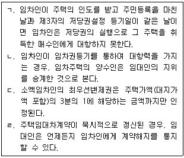
- ㄱ, ㄴ
- ㄴ, ㄹ
- ㄷ, ㄹ
- ㄱ, ㄴ, ㄷ
- ㄱ, ㄷ, ㄹ
(정답률: 38%)
40. 중개업자가 상가건물임대차보호법의 적용을 받는 상가건물의 임대차를 중개하면서 의뢰인에게 설명한 내용으로 옳은 것은?
- 상가건물의 임대차를 등기한 때에는 그 다음날부터 제3자에 대하여 효력이 생긴다.
- 임차인은 대항력과 확정일자를 갖춘 경우, 경매에 의해 매각된 임차건물을 양수인에게 인도하지 않더라도 배당에서 보증금을 수령할 수 있다.
- 임대차 기간을 6월로 정한 경우, 임차인은 그 유효함을 주장할 수 없다.
- 임대차가 묵시적으로 갱신된 경우, 그 존속기간은 임대인이 그 사실을 안 때로부터 1년으로 본다.
- 임대인의 동의를 받고 전대차계약을 체결한 전차인은 임차인의 계약갱신요구권 행사기간 이내에 임차인을 대위하여 임대인에게 계약갱신요구권을 행사할 수 있다.
(정답률: 37%)
2과목: 임의구분
41. 측량ㆍ수로조사 및 지적에 관한 법령상 토지소유자가 지적소관청에 신청할 수 있는 토지의 이동 종목이 아닌 것은?
- 신규등록
- 분할
- 지목변경
- 등록전환
- 소유자변경
(정답률: 45%)
42. 토지대장에 등록된 토지소유자의 변경사항은 등기관서에서 등기한 것을 증명하거나 제공한 자료에 따라 정리한다. 다음 중 등기관서에서 등기한 것을 증명하거나 제공한 자료가 아닌 것은?
- 등기필증
- 등기완료통지서
- 등기사항증명서
- 등기신청접수증
- 등기전산정보자료
(정답률: 49%)
43. 측량ㆍ수로조사 및 지적에 관한 법령상 부동산종합공부의 등록사항에 해당하지 않는 것은?
- 토지의 표시와 소유자에 관한 사항:「측량ㆍ수로조사 및 지적에 관한 법률」에 따른 지적공부의 내용
- 건축물의 표시와 소유자에 관한 사항(토지에 건축물이 있는 경우만 해당한다):「건축법」제38조에 따른 건축물대장의 내용
- 토지의 이용 및 규제에 관한 사항:「토지이용규제 기본법」제10조에 따른 토지이용계획확인서의 내용
- 부동산의 보상에 관한 사항:「공익사업을 위한 토지 등의 취득 및 보상에 관한 법률」제68조에 따른 부동산의 보상 가격 내용
- 부동산의 가격에 관한 사항:「부동산 가격공시 및 감정평가에 관한 법률」제11조에 따른 개별공시지가, 같은 법 제16조 및 제17조에 따른 개별주택가격 및 공동주택가격 공시내용
(정답률: 36%)
44. 측량ㆍ수로조사 및 지적에 관한 법령상 지적정리 등의 통지에 관한 설명으로 틀린 것은?
- 지적소관청이 시ㆍ도지사나 대도시 시장의 승인을 받아 지번부여지역의 일부에 대한 지번을 변경하여 지적공부에 등록한 경우 해당 토지소유자에게 통지하여야 한다.
- 토지의 표시에 관한 변경등기가 필요하지 아니한 지적 정리 등의 통지는 지적소관청이 지적공부에 등록한 날부터 10일 이내 해당 토지소유자에게 하여야 한다.
- 지적소관청은 지적공부의 전부 또는 일부가 멸실되거나 훼손되어 이를 복구 등록한 경우 해당 토지소유자에게 통지하여야 한다.
- 토지의 표시에 관한 변경등기가 필요한 지적정리 등의 통지는 지적소관청이 그 등기완료의 통지서를 접수한 날부터 15일 이내 해당 토지소유자에게 하여야 한다.
- 지적소관청이 직권으로 조사ㆍ측량하여 결정한 지번ㆍ지목ㆍ면적ㆍ경계 또는 좌표를 지적공부에 등록한 경우 해당 토지소유자에게 통지하여야 한다.
(정답률: 36%)
45. 지적공부에 등록하는 면적에 관한 설명으로 틀린 것은?
- 면적은 토지대장 및 경계점좌표등록부의 등록사항이다.
- 지적도의 축척이 600분의 1인 지역의 토지 면적은 제곱미터 이하 한 자리 단위로 한다.
- 지적도의 축척이 1200분의 1인 지역의 1필지 면적이 1제곱미터 미만일 때에는 1제곱미터로 한다.
- 임야도의 축척이 6000분의 1인 지역의 1필지 면적이 1제곱미터 미만일 때에는 1제곱미터로 한다.
- 경계점좌표등록부에 등록하는 지역의 1필지 면적이 0.1제곱미터 미만일 때에는 0.1제곱미터로 한다.
(정답률: 46%)
46. 지방지적위원회의 심의ㆍ의결 사항으로 옳은 것은?
- 지적측량에 대한 적부심사(適否審査) 청구사항
- 지적측량기술의 연구ㆍ개발 및 보급에 관한 사항
- 지적 관련 정책 개발 및 업무 개선 등에 관한 사항
- 지적기술자의 업무정지 처분 및 징계요구에 관한 사항
- 지적분야 측량기술자의 양성에 관한 사항
(정답률: 48%)
47. 측량ㆍ수로조사 및 지적에 관한 법령상 지상 경계의 결정기준에 관한 설명으로 옳은 것을 모두 고른 것은?(단, 지상 경계의 구획을 형성하는 구조물 등의 소유자가 다른 경우는 제외함)
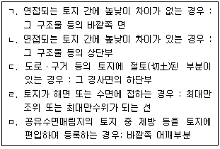
- ㄱ, ㄴ
- ㄱ, ㅁ
- ㄴ, ㄷ
- ㄷ, ㄹ
- ㄹ, ㅁ
(정답률: 46%)
48. 측량ㆍ수로조사 및 지적에 관한 법령상 지목의 구분 기준에 관한 설명으로 옳은 것은?
- 물을 상시적으로 이용하지 않고 닥나무ㆍ묘목ㆍ관상수 등의 식물을 주로 재배하는 토지는 “전”으로 한다.
- 온수ㆍ약수ㆍ석유류 등을 일정한 장소로 운송하는 송수관ㆍ송유관 및 저장시설의 부지는 “광천지”로 한다.
- 아파트ㆍ공장 등 단일 용도의 일정한 단지 안에 설치된 통로 등은 “도로”로 한다.
- 「도시공원 및 녹지 등에 관한 법률」에 따른 묘지공원으로 결정ㆍ고시된 토지는 “공원”으로 한다.
- 자연의 유수(流水)가 있거나 있을 것으로 예상되는 소규모 수로부지는 “하천”으로 한다.
(정답률: 44%)
49. 측량ㆍ수로조사 및 지적에 관한 법령상 지적측량 의뢰 등에 관한 설명으로 틀린 것은?
- 토지소유자는 토지를 분할하는 경우로서 지적측량을 할 필요가 있는 경우에는 지적측량수행자에게 지적측량을 의뢰하여야 한다.
- 지적측량을 의뢰하려는 자는 지적측량 의뢰서(전자문서로 된 의뢰서를 포함한다)에 의뢰 사유를 증명하는 서류(전자문서를 포함한다)를 첨부하여 지적측량수행자에게 제출하여야 한다.
- 지적측량수행자는 지적측량 의뢰를 받은 때에는 측량기간, 측량일자 및 측량 수수료 등을 적은 지적측량 수행계획서를 그 다음 날까지 지적소관청에 제출하여야 한다.
- 지적기준점을 설치하지 않고 측량 또는 측량검사를 하는 경우 지적측량의 측량기간은 5일, 측량검사기간은 4일을 원칙으로 한다.
- 지적측량 의뢰인과 지적측량수행자가 서로 합의하여 따로 기간을 정하는 경우에는 그 기간에 따르되, 전체 기간의 5분의 3은 측량기간으로, 전체 기간의 5분의 2는 측량검사기간으로 본다.
(정답률: 49%)
50. 중앙지적위원회의 위원이 중앙지적위원회의 심의ㆍ의결에서 제척(除斥)되는 경우에 해당하지 않는 것은?
- 위원이 해당 안건의 당사자와 친족이거나 친족이었던 경우
- 위원이 해당 안건에 대하여 증언, 진술 또는 감정을 한 경우
- 위원이 중앙지적위원회에서 해당 안건에 대하여 현지조사 결과를 보고 받거나 관계인의 의견을 들은 경우
- 위원이 속한 법인ㆍ단체 등이 해당 안건의 당사자의 대리인이거나 대리인이었던 경우
- 위원의 배우자이었던 사람이 해당 안건의 당사자와 공동권리자 또는 공동의무자인 경우
(정답률: 46%)
51. 부동산종합공부에 관한 설명으로 틀린 것은?
- 지적소관청은 부동산의 효율적 이용과 부동산과 관련된 정보의 종합적 관리ㆍ운영을 위하여 부동산종합공부를 관리ㆍ운영한다.
- 지적소관청은 부동산종합공부를 영구히 보존하여야 하며, 멸실 또는 훼손에 대비하여 이를 별도로 복제하여 관리하는 정보관리체계를 구축하여야 한다.
- 지적소관청은 부동산종합공부의 불일치 등록사항에 대하여는 등록사항을 정정하고, 등록사항을 관리하는 기관의 장에게 그 내용을 통지하여야 한다.
- 지적소관청은 부동산종합공부의 정확한 등록 및 관리를 위하여 필요한 경우에는 부동산종합공부의 등록사항을 관리하는 기관의 장에게 관련 자료의 제출을 요구할 수 있다.
- 부동산종합공부의 등록사항을 관리하는 기관의 장은 지적소관청에 상시적으로 관련 정보를 제공하여야 한다.
(정답률: 33%)
52. 다음 중 지적공부와 등록사항의 연결이 틀린 것은?
- 임야대장 - 토지의 소재 및 개별공시지가와 그 기준일
- 경계점좌표등록부 - 좌표와 건축물 및 구조물 등의 위치
- 대지권등록부 - 대지권 비율과 전유부분(專有部分)의 건물표시
- 임야도 - 경계와 삼각점 및 지적기준점의 위치
- 공유지연명부 - 소유권 지분 및 토지소유자가 변경된 날과 그 원인
(정답률: 34%)
53. 등기사무에 관한 설명으로 틀린 것은?
- 등기신청은 신청정보가 전산정보처리조직에 저장된 때 접수된 것으로 본다.
- 1동의 건물을 구분한 건물의 경우, 1동의 건물에 속하는 전부에 대하여 1개의 등기기록을 사용한다.
- 등기의무자가 2인 이상일 경우, 직권으로 경정등기를 마친 등기관은 그 전원에게 그 사실을 통지하여야 한다.
- 등기관이 등기를 마친 경우, 그 등기는 접수한 때부터 효력이 생긴다.
- 등기사항증명서의 발급청구는 관할등기소가 아닌 등기소에 대하여도 할 수 있다.
(정답률: 30%)
54. 소유권등기에 관한 설명으로 틀린 것은?(다툼이 있으면 판례에 의함)
- 소유권보존등기의 신청인이 그의 소유권을 증명하기 위한 판결은 그가 소유자임을 증명하는 확정판결이면 충분하다.
- 소유권보존등기를 할 때에는 등기원인과 그 연월일을 기록하지 않는다.
- 공유물의 소유권등기에 부기등기된 분할금지약정의 변경등기는 공유자의 1인이 단독으로 신청할 수 있다.
- 미등기건물의 건축물대장에 최초의 소유자로 등록된 자로부터 포괄유증을 받은 자는 그 건물에 관한 소유권보존등기를 신청할 수 있다.
- 법원이 미등기부동산에 대한 소유권의 처분제한등기를 촉탁한 경우, 등기관은 직권으로 소유권보존등기를 하여야 한다.
(정답률: 40%)
55. 등기신청에 관한 설명으로 틀린 것은?(다툼이 있으면 판례에 의함)
- 처분금지가처분등기가 된 후, 가처분채무자를 등기의무자로 하여 소유권이전등기를 신청하는 가처분채권자는 그 가처분등기 후에 마쳐진 등기 전부의 말소를 단독으로 신청할 수 있다.
- 가처분채권자가 가처분등기 후의 등기말소를 신청할 때에는 “가처분에 의한 실효”를 등기원인으로 하여야 한다.
- 가처분채권자의 말소신청에 따라 가처분등기 후의 등기를 말소하는 등기관은 그 가처분등기도 직권말소하여야 한다.
- 등기원인을 경정하는 등기는 단독신청에 의한 등기의 경우에는 단독으로, 공동신청에 의한 등기의 경우에는 공동으로 신청하여야 한다.
- 체납처분으로 인한 상속부동산의 압류등기를 촉탁하는 관공서는 상속인의 승낙이 없더라도 권리이전의 등기를 함께 촉탁할 수 있다.
(정답률: 33%)
56. 등기절차에 관한 설명으로 틀린 것은?
- 법률에 다른 규정이 없으면, 촉탁에 따른 등기절차는 신청등기에 관한 규정을 준용한다.
- 외국인의 부동산등기용등록번호는 그 체류지를 관할하는 지방출입국ㆍ외국인관서의 장이 부여한다.
- 등기원인에 권리소멸약정이 있으면, 그 약정의 등기는 부기로 한다.
- 제공된 신청정보와 첨부정보는 영구보존하여야 한다.
- 행정구역이 변경되면, 등기기록에 기록된 행정구역에 대하여 변경등기가 있는 것으로 본다.
(정답률: 27%)
57. 토지소유권이전등기 신청정보에 해당하지 않는 것은?
- 지목
- 소재와 지번
- 토지대장 정보
- 등기소의 표시
- 등기원인과 등기의 목적
(정답률: 25%)
58. 전세권의 등기에 관한 설명으로 틀린 것은?
- 수개의 부동산에 관한 권리를 목적으로 하는 전세권설정등기를 할 수 있다.
- 공유부동산에 전세권을 설정할 경우, 그 등기기록에 기록된 공유자 전원이 등기의무자이다.
- 등기원인에 위약금약정이 있는 경우, 등기관은 전세권 설정등기를 할 때 이를 기록한다.
- 전세권이 소멸하기 전에 전세금반환채권의 일부양도에 따른 전세권일부이전등기를 신청할 수 있다.
- 전세금반환채권의 일부양도를 원인으로 한 전세권일부 이전등기를 할 때 양도액을 기록한다.
(정답률: 34%)
59. 각 권리의 설정등기에 따른 필요적 기록사항으로 옳은 것을 모두 고른 것은?
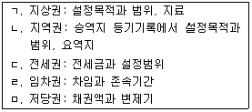
- ㄱ
- ㄴ, ㄷ
- ㄴ, ㄹ, ㅁ
- ㄱ, ㄷ, ㄹ, ㅁ
- ㄱ, ㄴ, ㄷ, ㄹ, ㅁ
(정답률: 29%)
60. 甲은 乙에게 甲 소유의 X부동산을 부담 없이 증여하기로 하였다. 부동산등기 특별조치법에 따른 부동산 소유권등기의 신청에 관한 설명으로 틀린 것은? (다툼이 있으면 판례에 의함)
- 甲과 乙은 증여계약의 효력이 발생한 날부터 60일 내에 X부동산에 대한 소유권이전등기를 신청하여야 한다.
- 특별한 사정이 없으면, 신청기간 내에 X부동산에 대한 소유권이전등기를 신청하지 않아도 원인된 계약은 효력을 잃지 않는다.
- 甲이 X부동산에 대한 소유권보존등기를 신청할 수 있음에도 이를 하지 않고 乙에게 증여하는 계약을 체결하였다면, 증여계약의 체결일이 보존등기 신청기간의 기산일이다.
- X부동산에 관한 소유권이전등기를 신청기간 내에 신청하지 않고 乙이 丙에게 소유권이전등기청구권을 양도하여도 당연히 그 양도행위의 사법상 효력이 부정되는 것은 아니다.
- 만일 甲이 乙에게 X부동산을 매도하였다면, 계약으로 정한 이행기가 그 소유권이전등기 신청기간의 기산일이다.
(정답률: 28%)
61. 가등기에 관한 설명으로 틀린 것은?
- 가등기 후 본등기의 신청이 있는 경우, 가등기의 순위번호를 사용하여 본등기를 하여야 한다.
- 소유권이전등기청구권보전 가등기에 의한 본등기를 한 경우, 등기관은 그 가등기 후 본등기 전에 마친 등기전부를 직권말소한다.
- 임차권설정등기청구권보전 가등기에 의한 본등기를 마친 경우, 등기관은 가등기 후 본등기 전에 가등기와 동일한 부분에 마친 부동산용익권 등기를 직권말소한다.
- 저당권설정등기청구권보전 가등기에 의한 본등기를 한 경우, 등기관은 가등기 후 본등기 전에 마친 제3자 명의의 부동산용익권 등기를 직권말소할 수 없다.
- 가등기명의인은 단독으로 그 가등기의 말소를 신청할 수 있다.
(정답률: 29%)
62. 저당권의 등기에 관한 설명으로 틀린 것은?
- 공동저당설정등기를 신청하는 경우, 각 부동산에 관한 권리의 표시를 신청정보의 내용으로 등기소에 제공하여야 한다.
- 저당의 목적이 되는 부동산이 5개 이상인 경우, 등기신청인은 공동담보목록을 작성하여 등기소에 제공하여야한다.
- 금전채권이 아닌 채권을 담보하기 위한 저당권설정등기를 할 수 있다.
- 대지권이 등기된 구분건물의 등기기록에는 건물만을 목적으로 하는 저당권설정등기를 하지 못한다.
- 저당권부 채권에 대한 질권을 등기할 수 있다.
(정답률: 25%)
63. 부동산등기법상 중복등기에 관한 설명으로 틀린 것은?
- 같은 건물에 관하여 중복등기기록을 발견한 등기관은 대법원규칙에 따라 그 중 어느 하나의 등기기록을 폐쇄하여야 한다.
- 중복등기기록의 정리는 실체의 권리관계에 영향을 미치지 않는다.
- 선ㆍ후등기기록에 등기된 최종 소유권의 등기명의인이 같은 경우로서 후등기기록에 소유권 이외의 권리가 등기되고 선등기기록에 그러한 등기가 없으면, 선등기기록을 폐쇄한다.
- 중복등기기록 중 어느 한 등기기록의 최종 소유권의 등기 명의인은 그 명의의 등기기록의 폐쇄를 신청할 수 있다.
- 등기된 토지의 일부에 관하여 별개의 등기기록이 개설된 경우, 등기관은 직권으로 분필등기를 한 후 중복등 기기록을 정리하여야 한다.
(정답률: 20%)
64. 신탁등기에 관한 설명으로 옳은 것은?
- 수탁자가 수인일 경우, 신탁재산은 수탁자의 공유로 한다.
- 수익자가 수탁자를 대위하여 신탁등기를 신청할 경우, 해당 부동산에 대한 권리의 설정등기와 동시에 신청하여야 한다.
- 신탁으로 인한 권리의 이전등기와 신탁등기는 별개의 등기이므로 그 순위번호를 달리한다.
- 신탁종료로 신탁재산에 속한 권리가 이전된 경우, 수탁자는 단독으로 신탁등기의 말소등기를 신청할 수 있다.
- 위탁자가 자기의 부동산에 채권자 아닌 수탁자를 저당권자로 하여 설정한 저당권을 신탁재산으로 하고 채권자를 수익자로 정한 신탁은 물권법정주의에 반하여 무효이다.
(정답률: 21%)
65. 소득세법상 양도소득세의 물납 및 분할납부에 관한 설명으로 옳은 것은?
- 양도소득세를 물납하고자 하는 자는 양도소득세 과세표준 확정신고기한이 끝난 후 10일 이내에 납세지 관할세무서장에게 신청하여야 한다.
- 양도소득세의 물납은 공공사업의 시행자에게 수용되어 발생한 양도차익에 대한 양도소득세를 한도로 토지 등을 양도한 연도의 납부세액이 1천만원 이하인 경우에 한한다.
- 양도소득세의 물납을 부동산으로 하는 경우 그 수납가액은 「상속세 및 증여세법」상 부동산 등의 평가에 관한 규정을 준용하여 평가한 가액에 따른다.
- 양도소득세의 분할납부는 예정신고납부시에는 적용되지 않고 확정신고납부시에만 적용된다.
- 거주자가 양도소득세 확정신고에 따라 납부할 세액이 3천600만원인 경우 최대 1천800만원까지 분할납부할 수 있다.
(정답률: 44%)
66. 소득세법상 거주자 甲이 2008년 1월 20일에 취득한 건물(취득가액 3억원)을 甲의 배우자 乙에게 2012년 3월 5일자로 증여(해당 건물의 시가 8억원)한 후, 乙이 2014년 5월 20일에 해당 건물을 甲ㆍ乙의 특수 관계인이 아닌 丙에게 10억원에 매도하였다. 해당 건물의 양도소득세에 관한 설명으로 옳은 것은?(단, 취득ㆍ증여ㆍ매도의 모든 단계에서 등기를 마침)
- 양도소득세 납세의무자는 甲이다.
- 양도소득금액 계산시 장기보유특별공제가 적용된다.
- 양도차익 계산시 양도가액에서 공제할 취득가액은 8억원이다.
- 乙이 납부한 증여세는 양도소득세 납부세액 계산시 세액공제된다.
- 양도소득세에 대해 甲과 乙이 연대하여 납세의무를 진다.
(정답률: 44%)
67. 소득세법상 양도차익 계산시 취득 및 양도시기로 틀린 것은?
- 대금을 청산한 날이 분명하지 아니한 경우: 등기부ㆍ등록부 또는 명부 등에 기재된 등기ㆍ등록접수일 또는 명의개서일
- 증여에 의하여 취득한 자산: 증여를 받은 날
- 「공익사업을 위한 토지 등의 취득 및 보상에 관한 법률」에 따라 공익사업을 위하여 수용되는 경우: 사업인정고시일
- 대금을 청산하기 전에 소유권이전등기(등록 및 명의개서 포함)를 한 경우: 등기부ㆍ등록부 또는 명부 등에 기재된 등기접수일
- 상속에 의하여 취득한 자산: 상속개시일
(정답률: 43%)
68. 소득세법상 거주자 甲이 2010년 5월 2일 취득하여 2014년 3월 20일 등기한 상태로 양도한 건물에 대한 자료이다. 甲의 양도소득세 부담을 최소화하기 위한 양도차익은?
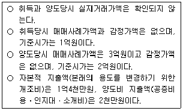
- 1억4천만원
- 1억4천2백만원
- 1억4천3백만원
- 1억4천7백만원
- 1억4천9백만원
(정답률: 29%)
69. 소득세법상 국외자산 양도에 관한 설명으로 옳은 것은?
- 양도차익 계산시 필요경비의 외화환산은 지출일 현재 「외국환거래법」에 의한 기준환율 또는 재정환율에 의한다.
- 국외자산 양도시 양도소득세의 납세의무자는 국외자산의 양도일까지 계속하여 3년간 국내에 주소를 둔 거주자이다.
- 미등기 국외토지에 대한 양도소득세율은 70%이다.
- 장기보유특별공제는 국외자산의 보유기간이 3년 이상인 경우에만 적용된다.
- 국외자산의 양도가액은 실지거래가액이 있더라도 양도 당시 현황을 반영한 시가에 의하는 것이 원칙이다.
(정답률: 30%)
70. 소득세법상 양도소득의 과세대상자산을 모두 고른 것은?(단, 거주자가 국내 자산을 양도한 것으로 한정함)
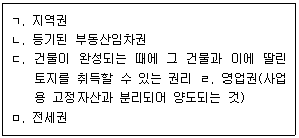
- ㄱ, ㄴ, ㄹ
- ㄴ, ㄷ, ㅁ
- ㄷ, ㄹ, ㅁ
- ㄱ, ㄴ, ㄷ, ㄹ
- ㄱ, ㄴ, ㄷ, ㅁ
(정답률: 36%)
71. 소득세법상 국내에 소재한 주택을 임대한 경우 발생하는 소득에 관한 설명으로 틀린 것은?(단, 아래의 주택은 상시 주거용으로 사용하고 있음)
- 주택 1채만을 소유한 거주자가 과세기간 종료일 현재 기준시가 10억원인 해당 주택을 전세금을 받고 임대하여 얻은 소득에 대해서는 소득세가 과세되지 아니한다.
- 주택 2채를 소유한 거주자가 1채는 월세계약으로 나머지 1채는 전세계약의 형태로 임대한 경우, 월세계약에 의하여 받은 임대료에 대해서만 소득세가 과세된다.
- 거주자의 보유주택 수를 계산함에 있어서 다가구주택은 1개의 주택으로 보되, 구분등기된 경우에는 각각을 1개의 주택으로 계산한다.
- 주택의 임대로 인하여 얻은 과세대상 소득은 사업소득으로서 해당 거주자의 종합소득금액에 합산된다.
- 주택을 임대하여 얻은 소득은 거주자가 사업자등록을 한 경우에 한하여 소득세 납세의무가 있다.
(정답률: 31%)
72. 2014년 4월 중 부동산을 취득하는 경우, 취득단계에서 부담할 수 있는 세금을 모두 고른 것은?
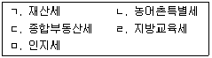
- ㄱ, ㄴ, ㄷ
- ㄱ, ㄴ, ㅁ
- ㄱ, ㄷ, ㄹ
- ㄴ, ㄹ, ㅁ
- ㄷ, ㄹ, ㅁ
(정답률: 48%)
73. 지방세법상 부동산의 유상취득으로 보지 않는 것은?
- 공매를 통하여 배우자의 부동산을 취득한 경우
- 파산선고로 인하여 처분되는 직계비속의 부동산을 취득한 경우
- 배우자의 부동산을 취득한 경우로서 그 취득대가를 지급한 사실을 증명한 경우
- 권리의 이전이나 행사에 등기가 필요한 부동산을 직계존속과 서로 교환한 경우
- 증여자의 채무를 인수하는 부담부증여로 취득한 경우로서 그 채무액에 상당하는 부분을 제외한 나머지 부분의 경우
(정답률: 44%)
74. 지방세법상 취득세의 과세표준과 세율에 관한 설명으로 옳은 것은?(단, 2014년 중 취득한 과세대상 재산에 한함)
- 취득가액이 100만원인 경우에는 취득세를 부과하지 아니한다.
- 같은 취득물건에 대하여 둘 이상의 세율이 해당되는 경우에는 그 중 낮은 세율을 적용한다.
- 국가로부터 유상취득한 경우에는 사실상의 취득가격 또는 연부금액을 과세표준으로 한다.
- 대도시에서 법인이 사원에 대한 임대용으로 직접 사용할 목적으로 사원주거용 목적의 공동주택(1구의 건축물의 연면적이 60제곱미터 이하임)을 취득하는 경우에는 중과세율을 적용한다.
- 유상거래를 원인으로 취득당시의 가액이 6억원 이하인 주택을 취득하는 경우에는 1천분의 20의 세율을 적용한다.
(정답률: 48%)
75. 지방세법상 취득세의 부과ㆍ징수에 관한 설명으로 틀린 것은?
- 납세의무자가 취득세 과세물건을 사실상 취득한 후 취득세 신고를 하지 아니하고 매각하는 경우에는 산출세액에 100분의 50을 가산한 금액을 세액으로 하여 보통 징수의 방법으로 징수한다.
- 재산권을 공부에 등기하려는 경우에는 등기하기 전까지 취득세를 신고납부하여야 한다.
- 등기ㆍ등록관서의 장은 취득세가 납부되지 아니하였거나 납부부족액을 발견하였을 때에는 다음 달 10일까지 납세지를 관할하는 시장ㆍ군수에게 통보하여야 한다.
- 취득세 납세의무자가 신고 또는 납부의무를 다하지 아니하면 산출세액 또는 그 부족세액에「지방세기본법」의 규정에 따라 산출한 가산세를 합한 금액을 세액으로하여 보통징수의 방법으로 징수한다.
- 지방자치단체의 장은 취득세 납세의무가 있는 법인이 장부 등의 작성과 보존의무를 이행하지 아니한 경우에는 산출된 세액 또는 부족세액의 100분의 10에 상당하는 금액을 징수하여야 할 세액에 가산한다.
(정답률: 40%)
76. 지방세법상 취득세 신고ㆍ납부에 관한 설명이다. ( )안에 들어갈 내용을 순서대로 나열한 것은?(단, 납세자가 국내에 주소를 둔 경우에 한함)
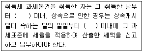
- 10일, 3개월
- 30일, 3개월
- 60일, 3개월
- 60일, 6개월
- 90일, 6개월
(정답률: 44%)
77. 조세의 납부방법으로 물납과 분할납부가 둘 다 가능한 것을 모두 고른 것은?(단, 물납과 분할납부의 법정 요건은 전부 충족한 것으로 가정함)
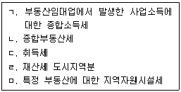
- ㄱ, ㄴ
- ㄱ, ㄷ
- ㄴ, ㄷ
- ㄴ, ㄹ
- ㄹ, ㅁ
(정답률: 36%)
78. 지방세법상 토지에 대한 재산세를 부과함에 있어서 과세대상의 구분(종합합산과세대상, 별도합산과세대상, 분리과세대상)이 같은 것으로만 묶인 것은?
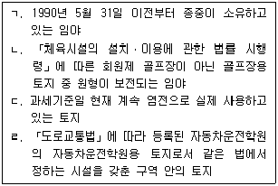
- ㄱ, ㄴ
- ㄴ, ㄷ
- ㄴ, ㄹ
- ㄱ, ㄴ, ㄷ
- ㄱ, ㄷ, ㄹ
(정답률: 27%)
79. 지방세법상 재산세의 부과ㆍ징수에 관한 설명으로 틀린 것은?
- 재산세는 관할지방자치단체의 장이 세액을 산정하여 보통징수의 방법으로 부과ㆍ징수한다.
- 고지서 1장당 재산세로 징수할 세액이 2천원 미만인 경우에는 해당 재산세를 징수하지 아니한다.
- 과세표준의 1천분의 40의 재산세 세율이 적용되는 별장에 대한 재산세의 납기는 별장 이외의 주택에 대한 재산세의 납기와 같다.
- 국가 또는 지방자치단체의 체납된 재산세에 대하여는 가산금과 중가산금의 적용을 모두 배제한다.
- 「신탁법」에 따라 수탁자 명의로 등기된 신탁재산에 대한 재산세가 체납된 경우에는 체납된 재산이 속한 신탁에 다른 재산이 있는 경우에도 체납된 해당 재산에 대해서만 압류할 수 있다.
(정답률: 36%)
80. 지방세법상 재산세의 납세의무자에 관한 설명으로 틀린 것은?
- 상속이 개시된 재산으로서 상속등기가 이행되지 아니하고 사실상의 소유자를 신고하지 아니하였을 경우: 「민법」상 상속지분이 가장 높은 상속자(상속지분이 가장 높은 상속자가 두 명 이상인 경우에는 그 중 연장자)
- 「신탁법」에 따라 수탁자 명의로 등기ㆍ등록된 신탁재산의 경우로서 위탁자별로 구분된 재산 : 그 위탁자
- 국가가 선수금을 받아 조성하는 매매용 토지로서 사실상 조성이 완료된 토지의 사용권을 무상으로 받은 경우 : 그 사용권을 무상으로 받은 자
- 「도시개발법」에 따라 시행하는 환지방식에 의한 도시개발사업 및「도시 및 주거환경정비법」에 따른 주택재개발사업의 시행에 따른 환지계획에서 일정한 토지를 환지로 정하지 아니하고 체비지로 정한 경우 : 사업시행자
- 공부상의 소유자가 매매 등의 사유로 소유권이 변동되었는데도 신고하지 아니하여 사실상의 소유자를 알 수 없을 때 : 공부상 소유자
(정답률: 35%)
3과목: 임의구분
81. 국토의 계획 및 이용에 관한 법령상 기반시설 중 방재시설에 해당하지 않는 것은?
- 하천
- 유수지
- 하수도
- 사방설비
- 저수지
(정답률: 47%)
82. 국토의 계획 및 이용에 관한 법령상 건폐율의 최대한도가 큰 용도지역부터 나열한 것은?(단, 조례는 고려하지 않음)
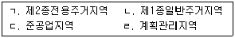
- ㄱ-ㄴ-ㄹ-ㄷ
- ㄴ-ㄱ-ㄷ-ㄹ
- ㄴ-ㄷ-ㄹ-ㄱ
- ㄷ-ㄱ-ㄹ-ㄴ
- ㄷ-ㄴ-ㄱ-ㄹ
(정답률: 52%)
83. 국토의 계획 및 이용에 관한 법령상 세분된 용도지구의 정의로 틀린 것은?
- 시가지경관지구 : 주거지역의 양호한 환경조성과 시가지의 도시경관을 보호하기 위하여 필요한 지구
- 중심지미관지구 : 토지의 이용도가 높은 지역의 미관을 유지ㆍ관리하기 위하여 필요한 지구
- 역사문화미관지구 : 문화재ㆍ전통사찰 등 역사ㆍ문화적으로 보존가치가 큰 시설 및 지역의 보호와 보존을 위하여 필요한 지구
- 주거개발진흥지구 : 주거기능을 중심으로 개발ㆍ정비할 필요가 있는 지구
- 복합개발진흥지구 : 주거기능, 공업기능, 유통ㆍ물류기능 및 관광ㆍ휴양기능 중 2 이상의 기능을 중심으로 개발ㆍ정비할 필요가 있는 지구
(정답률: 42%)
84. 국토의 계획 및 이용에 관한 법령상 공동구에 관한 설명으로 틀린 것은?
- 사업시행자는 공동구의 설치공사를 완료한 때에는 지체없이 공동구에 수용할 수 있는 시설의 종류와 공동구 설치위치를 일간신문에 공시하여야 한다.
- 공동구 점용예정자는 공동구에 수용될 시설을 공동구에 수용함으로써 용도가 폐지된 종래의 시설은 사업시행자가 지정하는 기간 내에 철거하여야 하고, 도로는 원상으로 회복하여야 한다.
- 사업시행자는 공동구의 설치가 포함되는 개발사업의 실시계획인가등이 있은 후 지체 없이 공동구 점용예정자에게 부담금의 납부를 통지하여야 한다.
- 공동구관리자가 공동구의 안전 및 유지관리계획을 변경하려면 미리 관계 행정기관의 장과 협의한 후 공동구협의회의 심의를 거쳐야 한다.
- 공동구관리자는 매년 1월 1일을 기준으로 6개월에 1회 이상 공동구의 정기점검을 실시하여야 한다.
(정답률: 23%)
85. 국토의 계획 및 이용에 관한 법령상 매수의무자인 지방자치단체가 매수청구를 받은 장기미집행 도시ㆍ군계획시설 부지 중 지목이 대(垈)인 토지를 매수할 때에 관한 설명으로 틀린 것은?
- 토지 소유자가 원하면 도시ㆍ군계획시설채권을 발행하여 매수대금을 지급할 수 있다.
- 도시ㆍ군계획시설채권의 상환기간은 10년 이내에서 정해진다.
- 매수 청구된 토지의 매수가격ㆍ매수절차 등에 관하여 「국토의 계획 및 이용에 관한 법률」에 특별한 규정이 있는 경우 외에는「공익사업을 위한 토지 등의 취득 및 보상에 관한 법률」을 준용한다.
- 비업무용 토지로서 매수대금이 2천만원을 초과하는 경우 매수의무자는 그 초과하는 금액에 대해서 도시ㆍ군계획시설채권을 발행하여 지급할 수 있다.
- 매수의무자가 매수하기로 결정한 토지는 매수 결정을 알린 날부터 2년 이내에 매수하여야 한다.
(정답률: 47%)
86. 국토의 계획 및 이용에 관한 법령상 도시지역에서 기반시설을 설치하는 경우 도시ㆍ군관리계획으로 결정하여야 하는 것은?
- 전세버스운송사업용 여객자동차터미널
- 광장 중 건축물부설광장
- 변전소
- 대지면적이 400제곱미터인 도축장
- 폐기물처리시설 중 재활용시설
(정답률: 43%)
87. 국토의 계획 및 이용에 관한 법령상 자연취락지구 안에 건축할 수 있는 건축물에 해당하지 않는 것은?(단, 4층 이하의 건축물에 한하고, 조례는 고려하지 않음)
- 단독주택
- 노래연습장
- 축산업용 창고
- 방송국
- 정신병원
(정답률: 40%)
88. 국토의 계획 및 이용에 관한 법령상 토지거래계약 허가구역의 지정에 관한 설명으로 틀린 것은?
- 허가구역이 둘 이상의 시의 관할 구역에 걸쳐 있는 경우 국토교통부장관이 지정한다.
- 시ㆍ도지사는 지정기간이 끝나는 허가구역을 계속하여 다시 허가구역으로 지정하려면 시ㆍ도도시계획위원회의 심의전에 미리 시장ㆍ군수 또는 구청장의 의견을 들어야 한다.
- 허가구역지정 공고내용의 통지를 받은 시장ㆍ군수 또는 구청장은 지체 없이 그 공고 내용을 그 허가구역을 관할하는 등기소의 장에게 통지하여야 한다.
- 허가구역의 지정은 허가구역의 지정을 공고한 날부터 5일 후에 그 효력이 발생한다.
- 국토교통부장관은 허가구역의 지정 사유가 없어졌다고 인정되면 중앙도시계획위원회의 심의를 거치지 않고 허가구역의 지정을 해제할 수 있다.
(정답률: 43%)
89. 국토의 계획 및 이용에 관한 법령상 건축물별 기반시설유발계수가 다음 중 가장 높은 것은?
- 제1종 근린생활시설
- 공동주택
- 의료시설
- 업무시설
- 숙박시설
(정답률: 45%)
90. 국토의 계획 및 이용에 관한 법령상 기반시설부담구역 등에 관한 설명으로 옳은 것은?
- 기반시설부담구역은 개발밀도관리구역과 중첩하여 지정 될 수 있다.
- 「고등교육법」에 따른 대학은 기반시설부담구역에 설치가 필요한 기반시설에 해당한다.
- 기반시설설치비용은 현금 납부를 원칙으로 하되, 부과대상 토지 및 이와 비슷한 토지로 하는 납부를 인정할 수 있다.
- 기반시설부담구역으로 지정된 지역에 대해 개발행위허가를 제한하였다가 이를 연장하기 위해서는 중앙도시계획위원회의 심의를 거쳐야 한다.
- 기반시설부담구역의 지정고시일부터 2년이 되는 날까지 기반시설설치계획을 수립하지 아니하면 그 2년이 되는 날의 다음날에 구역의 지정은 해제된 것으로 본다.
(정답률: 45%)
91. 국토의 계획 및 이용에 관한 법령상 개발행위의 허가에 관한 설명으로 틀린 것은?
- 개발행위허가를 받은 사업면적을 5퍼센트 범위 안에서 확대 또는 축소하는 경우에는 변경허가를 받지 않아도 된다.
- 허가권자가 개발행위허가를 하면서 환경오염 방지 등의 조치를 할 것을 조건으로 붙이려는 때에는 미리 개발행위허가를 신청한 자의 의견을 들어야 한다.
- 개발행위허가의 신청 내용이 성장관리방안의 내용에 어긋나는 경우에는 개발행위허가를 하여서는 아니 된다.
- 자연녹지지역에서는 도시계획위원회의 심의를 통하여 개발행위허가의 기준을 강화 또는 완화하여 적용할 수 있다.
- 건축물 건축에 대해 개발행위허가를 받은 자가 건축을 완료하고 그 건축물에 대해「건축법」상 사용승인을 받은 경우에는 따로 준공검사를 받지 않아도 된다.
(정답률: 38%)
92. 국토의 계획 및 이용에 관한 법령상 지구단위계획 및 지구단위계획구역에 관한 설명으로 틀린 것은?
- 주민은 도시ㆍ군관리계획의 입안권자에게 지구단위계획의 변경에 관한 도시ㆍ군관리계획의 입안을 제안할 수 있다.
- 개발제한구역에서 해제되는 구역 중 계획적인 개발 또는 관리가 필요한 지역은 지구단위계획구역으로 지정될 수 있다.
- 시장 또는 군수가 입안한 지구단위계획의 수립ㆍ변경에 관한 도시ㆍ군관리계획은 해당 시장 또는 군수가 직접 결정한다.
- 지구단위계획의 수립기준은 시ㆍ도지사가 국토교통부장관과 협의하여 정한다.
- 도시지역 외의 지역으로서 용도지구를 폐지하고 그 용도지구에서의 행위 제한 등을 지구단위계획으로 대체하려는 지역은 지구단위계획구역으로 지정될 수 있다.
(정답률: 44%)
93. 도시개발법령상 도시개발사업의 실시계획에 관한 설명으로 틀린 것은?
- 도시개발사업에 관한 실시계획에는 지구단위계획이 포함되어야 한다.
- 시ㆍ도지사가 실시계획을 작성하는 경우 국토교통부장관의 의견을 미리 들어야 한다.
- 실시계획인가신청서에는 축척 2만 5천분의 1 또는 5만분의 1의 위치도가 첨부되어야 한다.
- 관련 인ㆍ허가등의 의제를 받으려는 자는 실시계획의 인가를 신청하는 때에 해당 법률로 정하는 관계 서류를 함께 제출하여야 한다.
- 지정권자가 아닌 시행자가 실시계획의 인가를 받은 후, 사업비의 100분의 10의 범위에서 사업비를 증액하는 경우 지정권자의 인가를 받지 않아도 된다.
(정답률: 42%)
94. 도시개발법령상 원형지의 공급과 개발에 관한 설명으로 틀린 것은?
- 원형지를 공장 부지로 직접 사용하는 자는 원형지개발자가 될 수 있다.
- 원형지는 도시개발구역 전체 토지 면적의 3분의 1 이내의 면적으로만 공급될 수 있다.
- 원형지 공급 승인신청서에는 원형지 사용조건에 관한 서류가 첨부되어야 한다.
- 원형지 공급가격은 개발계획이 반영된 원형지의 감정가격으로 한다.
- 지방자치단체가 원형지개발자인 경우 원형지 공사완료 공고일부터 5년이 경과하기 전에도 원형지를 매각할 수 있다.
(정답률: 37%)
95. 도시개발법령상 도시개발사업의 시행에 관한 설명으로 틀린 것은?
- 도시개발사업의 시행자는 도시개발구역의 지정권자가 지정한다.
- 사업시행자는 도시개발사업의 일부인 도로, 공원 등 공공시설의 건설을 지방공사에 위탁하여 시행할 수 있다.
- 조합을 설립하려면 도시개발구역의 토지 소유자 7명 이상이 정관을 작성하여 지정권자에게 조합설립의 인가를 받아야 한다.
- 조합설립 인가신청을 위한 동의자 수 산정에 있어 도시개발구역의 토지면적은 국공유지를 제외하고 산정한다.
- 사업시행자가 도시개발사업에 관한 실시계획의 인가를 받은 후 2년 이내에 사업을 착수하지 아니하는 경우 지정권자는 시행자를 변경할 수 있다.
(정답률: 41%)
96. 도시개발법령상 도시개발구역의 지정에 관한 설명으로 틀린 것은?
- 서울특별시와 광역시를 제외한 인구 50만 이상의 대도시의 시장은 도시개발구역을 지정할 수 있다.
- 자연녹지지역에서 도시개발구역으로 지정할 수 있는 규모는 3만 제곱미터 이상이어야 한다.
- 계획관리지역에 도시개발구역을 지정할 때에는 도시개발구역을 지정한 후에 개발계획을 수립할 수 있다.
- 지정권자가 도시개발사업을 환지방식으로 시행하려고 개발계획을 수립하는 경우 사업시행자가 지방자치단체이면 토지 소유자의 동의를 받을 필요가 없다.
- 군수가 도시개발구역의 지정을 요청하려는 경우 주민이나 관계전문가 등으로부터 의견을 들어야 한다.
(정답률: 45%)
97. 도시개발법령상 환지방식의 사업시행에 관한 설명으로 옳은 것은?(단, 사업시행자는 행정청이 아님)
- 사업시행자가 환지계획을 작성한 경우에는 특별자치도지사, 시ㆍ도지사의 인가를 받아야 한다.
- 환지로 지정된 토지나 건축물을 금전으로 청산하는 내용으로 환지계획을 변경하는 경우에는 변경인가를 받아야 한다.
- 토지 소유자의 환지 제외 신청이 있더라도 해당 토지에 관한 임차권자등이 동의하지 않는 경우에는 해당 토지를 환지에서 제외할 수 없다.
- 환지예정지의 지정이 있으면 종전의 토지에 대한 임차권등은 종전의 토지에 대해서는 물론 환지예정지에 대해서도 소멸한다.
- 환지계획에서 환지를 정하지 아니한 종전의 토지에 있던 권리는 환지처분이 공고된 날의 다음 날이 끝나는 때에 소멸한다.
(정답률: 36%)
98. 도시개발법령상 도시개발사업조합의 조합원에 관한 설명으로 옳은 것은?
- 조합원은 도시개발구역 내의 토지의 소유자 및 저당권자로 한다.
- 의결권이 없는 조합원도 조합의 임원이 될 수 있다.
- 조합원으로 된 자가 금고 이상의 형의 선고를 받은 경우에는 그 사유가 발생한 다음 날부터 조합원의 자격을 상실한다.
- 조합원은 도시개발구역 내에 보유한 토지면적에 비례하여 의결권을 가진다.
- 조합원이 정관에 따라 부과된 부과금을 체납하는 경우 조합은 특별자치도지사ㆍ시장ㆍ군수 또는 구청장에게 그 징수를 위탁할 수 있다.
(정답률: 44%)
99. 도시 및 주거환경정비법령상 주택재개발사업 조합의 설립을 위한 동의자수 산정 시, 다음에서 산정되는 토지등소유자의 수는?(단, 권리관계는 제시된 것만 고려하며, 토지는 정비구역 안에 소재함)
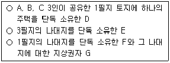
- 3명
- 4명
- 5명
- 7명
- 9명
(정답률: 38%)
100. 도시 및 주거환경정비법령상 사업시행계획 등에 관한 설명으로 틀린 것은?
- 시장ㆍ군수는 도시환경정비사업의 시행자가 지정개발자인 경우 시행자로 하여금 정비사업비의 100분의 30의 금액을 예치하게 할 수 있다.
- 사업시행계획서에는 사업시행기간 동안의 정비구역 내 가로등 설치, 폐쇄회로 텔레비전 설치 등 범죄예방대책이 포함되어야 한다.
- 시장ㆍ군수는 사업시행인가를 하고자 하는 경우 정비구역으로부터 200미터 이내에 교육시설이 설치되어 있는 때에는 해당 지방자치단체의 교육감 또는 교육장과 협의 하여야 한다.
- 시장ㆍ군수는 정비구역이 아닌 구역에서 시행하는 주택 재건축사업의 사업시행인가를 하고자 하는 경우 대통령령이 정하는 사항에 대하여 해당 건축위원회의 심의를 거쳐야 한다.
- 사업시행자가 사업시행인가를 받은 후 대지면적을 10퍼센트의 범위 안에서 변경하는 경우 시장ㆍ군수에게 신고하여야 한다.
(정답률: 38%)
101. 도시 및 주거환경정비법령상 정비구역 안에서의 행위중 시장ㆍ군수의 허가를 받아야 하는 것을 모두 고른것은?(단, 재해복구 또는 재난수습과 관련 없는 행위 임)
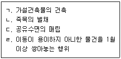
- ㄱ, ㄴ
- ㄷ, ㄹ
- ㄱ, ㄴ, ㄷ
- ㄴ, ㄷ, ㄹ
- ㄱ, ㄴ, ㄷ, ㄹ
(정답률: 43%)
102. 도시 및 주거환경정비법령상 주택재개발사업 조합에 관한 설명으로 옳은 것은?
- 주택재개발사업 추진위원회가 조합을 설립하려면 시ㆍ도지사의 인가를 받아야 한다.
- 조합원의 수가 50인 이상인 조합은 대의원회를 두어야 한다.
- 조합원의 자격에 관한 사항에 대하여 정관을 변경하고자 하는 경우 총회에서 조합원 3분의 2 이상의 동의를 얻어야 한다.
- 조합의 이사는 대의원회에서 해임될 수 있다.
- 조합의 이사는 조합의 대의원을 겸할 수 있다.
(정답률: 35%)
103. 도시 및 주거환경정비법령상 주택재건축사업에 관한 설명으로 옳은 것은?
- 주택재건축사업에 있어 ‘토지등소유자’는 정비구역안에 소재한 토지 또는 건축물의 소유자와 지상권자를 말한다.
- 주택재건축사업은 정비구역안에서 시행되어야 하며 정비구역이 아닌 구역에서 시행될 수 없다.
- 주택재건축사업의 추진위원회가 조합을 설립하고자 하는 때에는 법령상 요구되는 토지등소유자의 동의를 얻어 시장ㆍ군수에게 신고하여야 한다.
- 건축물의 매매로 인하여 조합원의 권리가 이전되어 조합원을 신규가입시키는 경우 조합원의 동의없이 시장ㆍ군수에게 신고하고 변경할 수 있다.
- 주택재건축사업의 안전진단에 드는 비용은 시ㆍ도지사가 부담한다.
(정답률: 25%)
104. 도시 및 주거환경정비법령상 조합에 의한 주택재개발사업의 시행에 관한 설명으로 틀린 것은?
- 사업을 시행하고자 하는 경우 시장ㆍ군수에게 사업시행 인가를 받아야 한다.
- 사업시행계획서에는 일부 건축물의 존치 또는 리모델링에 관한 내용이 포함될 수 있다.
- 인가받은 사업시행계획 중 건축물이 아닌 부대ㆍ복리시설의 위치를 변경하고자 하는 경우에는 변경인가를 받아야 한다.
- 사업시행으로 철거되는 주택의 소유자 또는 세입자를 위하여 사업시행자가 지방자치단체의 건축물을 임시수용시설로 사용하는 경우 사용료 또는 대부료는 면제된다.
- 조합이 시ㆍ도지사 또는 주택공사등에게 주택재개발사업의 시행으로 건설된 임대주택의 인수를 요청하는 경우 주택공사등이 우선하여 인수하여야 한다.
(정답률: 21%)
1⑤. 주택법령상 주택조합에 관한 설명으로 틀린 것은?
- 등록사업자와 공동으로 주택건설사업을 하는 주택조합은 등록하지 않고 20세대 이상의 공동주택의 건설사업을 시행할 수 있다.
- 리모델링주택조합은 그 리모델링 결의에 찬성하지 아니하는 자의 토지에 대하여 매도청구를 할 수 없다.
- 국민주택을 공급받기 위하여 직장주택조합을 설립하려는 자는 관할 시장ㆍ군수ㆍ구청장에게 신고하여야 한다.
- 투기과열지구에서 설립인가를 받은 지역주택조합이 구성원을 선정하는 경우 신청서의 접수 순서에 따라 조합원의 지위를 인정하여서는 아니 된다.
- 시공자와의 공사계약 체결은 조합총회의 의결을 거쳐야 한다.
(정답률: 41%)
106. 주택법령상 국민주택채권에 관한 설명으로 옳은 것은?
- 국민주택채권은 수도권에서 주거전용면적이 1세대당 100제곱미터 이하인 주택의 건설사업에 필요한 자금을 조달하기 위하여 발행하는 것이다.
- 국가 또는 지방자치단체에 등기ㆍ등록을 신청하는 자가 매입하는 국민주택채권은 제2종국민주택채권이다.
- 제1종국민주택채권의 원리금은 발행일부터 10년이 되는 날에 상환한다.
- 「사립학교법」의 규정에 의한 사립학교경영자가 교육용 토지를 취득하여 소유권의 이전등기를 하는 때에는 제1종국민주택채권을 매입하여야 한다.
- 「부동산투자회사법」에 따른 부동산투자회사는 제1종 국민주택채권의 매입의무가 면제된다.
(정답률: 20%)
107. 주택법령상 리모델링에 관한 설명으로 옳은 것은?(단, 조례는 고려하지 않음)
- 기존 14층 건축물에 수직증축형 리모델링이 허용되는 경우 2개층까지 증축할 수 있다.
- 리모델링주택조합의 설립인가를 받으려는 자는 인가신청서에 해당 주택소재지의 100분의 80 이상의 토지에 대한 토지사용승낙서를 첨부하여 관할 시장ㆍ군수 또는 구청장에게 제출하여야 한다.
- 소유자 전원의 동의를 받은 입주자대표회의는 시장ㆍ군수ㆍ구청장에게 신고하고 리모델링을 할 수 있다.
- 수직증축형 리모델링의 경우 리모델링주택조합의 설립인가신청서에 당해 주택이 사용검사를 받은 후 10년 이상의 기간이 경과하였음을 증명하는 서류를 첨부하여야 한다.
- 리모델링주택조합이 시공자를 선정하는 경우 수의계약의 방법으로 하여야 한다.
(정답률: 39%)
108. 주택법령상 주택의 전매행위 제한 등에 관한 설명으로 옳은 것은?
- 제한되는 전매에는 매매ㆍ증여ㆍ상속이나 그 밖에 권리의 변동을 수반하는 모든 행위가 포함된다.
- 투기과열지구에서 건설ㆍ공급되는 주택의 입주자로 선정된 지위의 전매제한기간은 수도권ㆍ충청권 외의 지역의 경우 3년이다.
- 상속에 의하여 취득한 주택으로 세대원 일부가 이전하는 경우 전매제한의 대상이 되는 주택이라도 전매할 수 있다.
- 사업주체가 전매행위가 제한되는 분양가상한제 적용주택을 공급하는 경우 그 주택의 소유권을 제3자에게 이전할 수 없음을 소유권에 관한 등기에 부기등기하여야 한다.
- 전매행위 제한을 위반하여 주택의 입주자로 선정된 지위의 전매가 이루어진 경우 사업주체가 전매대금을 지급하고 해당 입주자로 선정된 지위를 매입하여야 한다.
(정답률: 40%)
109. 주택법령상 주택공급과 관련하여 금지되는 공급질서 교란행위에 해당하지 않는 것은?
- 주택을 공급받을 수 있는 조합원 지위의 증여
- 주택상환사채의 저당
- 주택을 공급받을 수 있는 조합원 지위의 매매를 위한 인터넷 광고
- 주택상환사채의 매입을 목적으로 하는 전화 광고
- 입주자저축 증서의 증여
(정답률: 43%)
110. 주택법령상 인가 대상 행위가 아닌 것은?
- 지역주택조합의 해산
- 리모델링주택조합의 설립
- 국민주택을 공급받기 위하여 설립한 직장주택조합의 해산
- 승인받은 조합원 추가모집에 따른 지역주택조합의 변경
- 지역주택조합의 설립
(정답률: 33%)
111. 주택법령상 투기과열지구에 관한 설명으로 옳은 것은?
- 일정한 지역의 주택가격상승률이 물가상승률보다 현저히 높은 경우 관할 시장ㆍ군수ㆍ구청장은 해당 지역을 투기과열지구로 지정할 수 있다.
- 시ㆍ도지사가 투기과열지구를 지정하는 경우 당해 지역의 시장ㆍ군수ㆍ구청장과 협의하여야 한다.
- 투기과열지구로 지정되면 투기과열지구 내의 기존 주택에 대해서 주택의 전매제한이 적용된다.
- 주택의 분양계획이 지난 달보다 30퍼센트 이상 증가한 곳은 투기과열지구로 지정하여야 한다.
- 투기과열지구에서 건설ㆍ공급되는 주택의 입주자로 선정된 지위를 세대원 전원이 해외로 이주하게 되어 사업 주체의 동의를 받아 전매하는 경우에는 전매제한이 적용되지 않는다.
(정답률: 41%)
112. 건축법령상 도시지역에 건축하는 건축물의 대지와 도로 등에 관한 설명으로 틀린 것은?
- 연면적의 합계가 2천 제곱미터인 공장의 대지는 너비 6미터 이상의 도로에 4미터 이상 접하여야 한다.
- 쓰레기로 매립된 토지에 건축물을 건축하는 경우 성토, 지반 개량 등 필요한 조치를 하여야 한다.
- 군수는 건축물의 위치나 환경을 정비하기 위하여 필요하다고 인정하면 4미터 이하의 범위에서 건축선을 따로 지정할 수 있다.
- 담장의 지표 위 부분은 건축선의 수직면을 넘어서는 아니된다.
- 공장의 주변에 허가권자가 인정한 공지인 광장이 있는 경우 연면적의 합계가 1천 제곱미터인 공장의 대지는 도로에 2미터 이상 접하지 않아도 된다.
(정답률: 42%)
113. 건축법령상 건축물의 높이 제한에 관한 설명으로 틀린 것은?(단,「건축법」제73조에 따른 적용 특례 및 조례는 고려하지 않음)
- 전용주거지역과 일반주거지역 안에서 건축하는 건축물에 대하여는 일조의 확보를 위한 높이 제한이 적용된다.
- 일반상업지역에 건축하는 공동주택으로서 하나의 대지에 두 동(棟) 이상을 건축하는 경우에는 채광의 확보를 위한 높이 제한이 적용된다.
- 건축물의 높이가 정하여지지 아니한 가로구역의 경우 건축물 각 부분의 높이는 그 부분으로부터 전면(前面)도로의 반대쪽 경계선까지의 수평거리의 1.5배를 넘을 수 없다.
- 허가권자는 같은 가로구역에서 건축물의 용도 및 형태에 따라 건축물의 높이를 다르게 정할 수 있다.
- 허가권자는 가로구역별 건축물의 최고 높이를 지정하려면 지방건축위원회의 심의를 거쳐야 한다.
(정답률: 36%)
114. 건축법령상 대지의 조경 및 공개공지등의 설치에 관한 설명으로 옳은 것은?(단,「건축법」제73조에 따른 적용 특례 및 조례는 고려하지 않음)
- 도시ㆍ군계획시설에서 건축하는 연면적의 합계가 1천 500제곱미터 이상인 가설건축물에 대하여는 조경 등의 조치를 하여야 한다.
- 면적 5천 제곱미터 미만인 대지에 건축하는 공장에 대하여는 조경 등의 조치를 하지 아니할 수 있다.
- 녹지지역에 건축하는 창고에 대해서는 조경 등의 조치를 하여야 한다.
- 상업지역의 건축물에 설치하는 공개공지등의 면적은 대지면적의 100분의 10을 넘어야 한다.
- 공개공지등을 설치하는 경우 건축물의 건폐율은 완화하여 적용할 수 있으나 건축물의 높이 제한은 완화하여 적용할 수 없다.
(정답률: 42%)
115. 건축법령상 사용승인을 받은 건축물의 용도변경이 신고대상인 경우만을 모두 고른 것은?
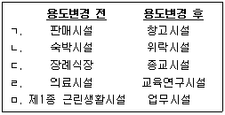
- ㄱ, ㄴ
- ㄱ, ㄷ
- ㄴ, ㄹ
- ㄷ, ㅁ
- ㄹ, ㅁ
(정답률: 35%)
116. 건축법령상 건축허가 및 건축신고 등에 관한 설명으로 틀린 것은?(단, 조례는 고려하지 않음)
- 바닥면적이 각 80제곱미터인 3층의 건축물을 신축하고자 하는 자는 건축허가의 신청 전에 허가권자에게 그 건축의 허용성에 대한 사전결정을 신청할 수 있다.
- 연면적의 10분의 3을 증축하여 연면적의 합계가 10만 제곱미터가 되는 창고를 광역시에 건축하고자 하는 자는 광역시장의 허가를 받아야 한다.
- 건축물의 건축허가를 받으면「국토의 계획 및 이용에 관한 법률」에 따른 개발행위허가를 받은 것으로 본다.
- 연면적의 합계가 200제곱미터인 건축물의 높이를 2미터 증축할 경우 건축신고를 하면 건축허가를 받은 것으로 본다.
- 건축신고를 한 자가 신고일부터 1년 이내에 공사에 착수하지 아니하면 그 신고의 효력은 없어진다.
(정답률: 30%)
117. 건축법령상 ‘건축’에 해당하는 것을 모두 고른 것은?
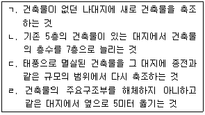
- ㄱ, ㄴ
- ㄷ, ㄹ
- ㄱ, ㄴ, ㄷ
- ㄴ, ㄷ, ㄹ
- ㄱ, ㄴ, ㄷ, ㄹ
(정답률: 42%)
118. 건축법령상 대지면적이 160제곱미터인 대지에 건축되어 있고, 각 층의 바닥면적이 동일한 지하 1층ㆍ지상 3층인 하나의 평지붕 건축물로서 용적률이 150퍼센트라고 할 때, 이 건축물의 바닥면적은 얼마인가?(단, 제시된 조건 이외의 다른 조건이나 제한은 고려하지 아니함)
- 60제곱미터
- 70제곱미터
- 80제곱미터
- 100제곱미터
- 120제곱미터
(정답률: 33%)
119. 농지법령상 농지 소유자가 소유 농지를 위탁경영할 수 있는 경우는?
- 1년간 국내 여행 중인 경우
- 농업법인이 소송 중인 경우
- 농작업 중의 부상으로 2개월간 치료가 필요한 경우
- 구치소에 수용 중이어서 자경할 수 없는 경우
- 2개월간 국외 여행 중인 경우
(정답률: 43%)
120. 농지법령상 농업경영에 이용하지 아니하는 농지의 처분의무에 관한 설명으로 옳은 것은?
- 농지 소유자가 선거에 따른 공직취임으로 휴경하는 경우에는 소유농지를 자기의 농업경영에 이용하지 아니하더라도 농지처분의무가 면제된다.
- 농지 소유 상한을 초과하여 농지를 소유한 것이 판명된 경우에는 소유농지 전부를 처분하여야 한다.
- 농지처분의무 기간은 처분사유가 발생한 날부터 6개월이다.
- 농지전용신고를 하고 그 농지를 취득한 자가 질병으로 인하여 취득한 날부터 2년이 초과하도록 그 목적사업에 착수하지 아니한 경우에는 농지처분의무가 면제된다.
- 농지 소유자가 시장ㆍ군수 또는 구청장으로부터 농지처분명령을 받은 경우 한국토지주택공사에 그 농지의 매수를 청구할 수 있다.
(정답률: 39%)